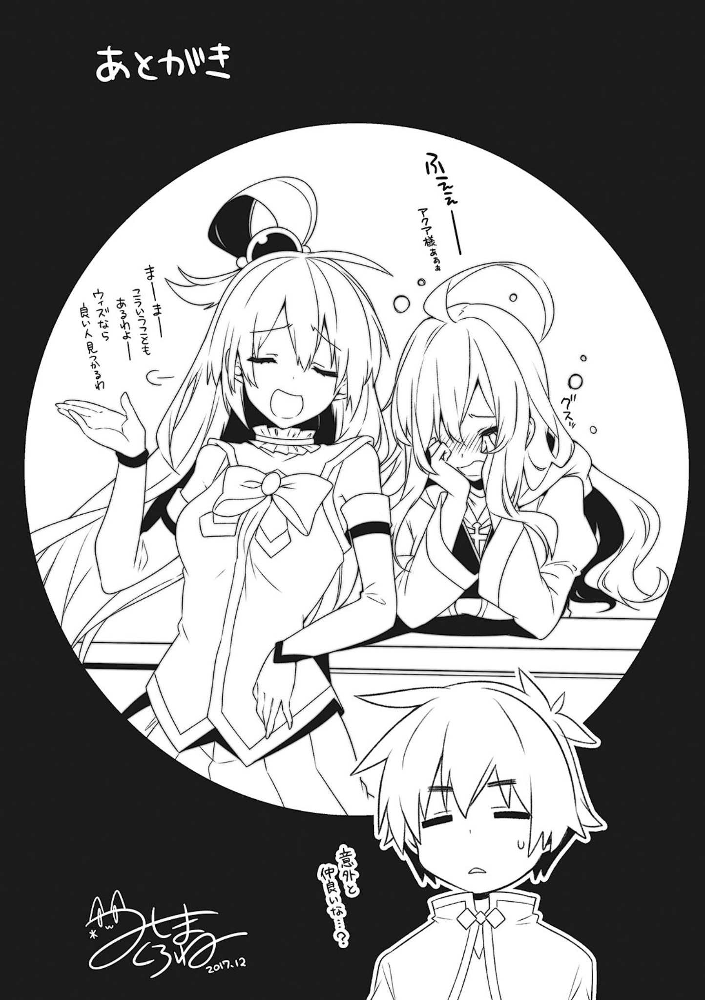
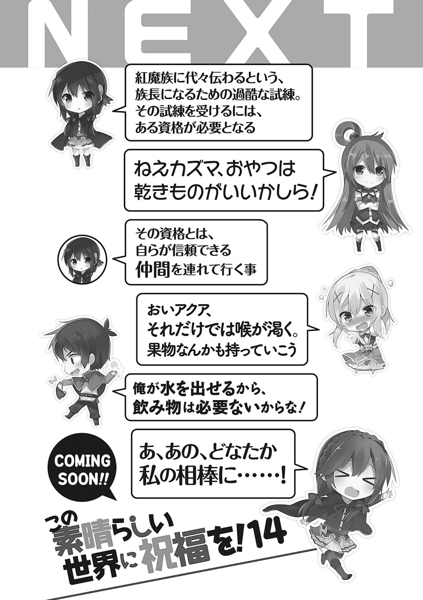

非常感谢购买『为美好的世界献上祝福』第十三卷！
时间过得真快，通过这个系列出道距今已经四年了。
走到这一步姑且算进入老手作家行列的我总算是能对编辑部说一些任性的话了。
『为了写出好的作品我需要有人去异世界给我拍拍真正的哥布林长什么样』或是『我想包下一天新宿站来玩捉迷藏』这种小要求还是能满足的。
与这些相比，想要实现『不设定截稿日期，想宅在家里玩一段时间』这样的要求才叫易如反——不行吗？对不起，我会好好写书的。
总之，这卷主要是维斯和巴尼尔的回合。
这两位的关系有点像和真和阿库娅，但他们其中一方没有性别，所以根本也不会有恋爱故事这种展开。
因此剩女店主将会永远地（以下略）。
下卷是红魔族的故事。
最近存在感稀薄的少女是否会得到救赎，如愿以偿成为她口中的『红魔族族长』呢？
敬请期待下一卷。
——对了，我还写了一本新书叫做『戦闘員、派遣します』。
讲的是差不多要征服世界了的邪恶组织里的某个小喽啰被派遣到其他星球开拓更广的侵略据点的故事。
是接受了改造手术的小喽啰利用现代兵器与魔王战斗的魔幻故事。
如果感兴趣的话请多多购买支持！
其实这次给各方添了至今为止最大的麻烦，不过书还算是顺利出版了。
这一切都是多亏了包括三岛教主在内的各位。
在感谢为这本书的出版贡献力量的所有人的同时。
还要为买下这本书的所有读者献上深深的感谢！
暁なつめ

画师后记
唔啊啊——阿库娅大人！
好啦好啦，这种事也是会有的——维斯一定能遇到真命天子的
这俩人关系原来这么好……？

下集预告
悠悠：为了接受红魔族代代相传的成为族长的残酷试炼，必须要先达成一个条件。
阿库娅：喂和真，零食就吃油炸的吧？
悠悠：条件就是，必须要带上自己信赖的伙伴。
达克尼斯：喂阿库娅，光吃这些干干的东西会口渴的，再拿点水果之类的吧。
和真：我能变出水来，所以饮料就不需要了。
悠悠：那，那个，谁来当我的搭档……
『真正的魔道具』
某一天的午后。
无聊的我闲逛来冒险者公会时，发现人头攒动。
「……？这是发生什么事了？」
「哦？这不是和真吗？魔道具的行商人来了，魔道具的」
一个面熟的冒险者告诉了我真相。但我听到『魔道具』三个字的瞬间就下意识地排斥了。
「反正肯定有缺点的吧？一使用就爆炸，或是不分敌我进行攻击」
「又不是维斯小姐家的魔道具，才不会有这种事呢。和真想必很有钱所以看两眼也没坏处哦？你家那群人已经在物色了」
仔细一看，发现我的同伴们确实在各自挑选着魔道具。
「喂和真，你来的正好。看这个，这个道具！这居然是能够暂时提高魔法威力的魔药！并且没有副作用！能借我点钱吗！」
「和真和真，我有点想买这个光是注入魔力就能不停转圈的扫除道具！有了这个就能轻松打扫厕所了！顺带一提没有副作用！」
虽然不知道为什么她们总在强调没有副作用，但这些似乎都还是能用的东西。
话虽如此，再给惠惠增强魔法威力也只会惹麻烦，就算给阿库娅买了她肯定也会马上弄坏。这时，达克尼斯正在拿着一块布片纠结着。
「能够提高敏捷的头巾吗……我该买吗？但是这样攻击不就能命中了吗？不，最近频繁和强敌战斗，还是打中比较好……」
「好，买了，马上买。我会给你买的，你给我一直装备在身上！」
发现非常适合达克尼斯的道具后，我马上决定购买。
「和，和真！这个是那啥，副作用……」
「没有副作用吧！好了赶快给我，我给你买下来！」
「啊啊！」
从达克尼斯手中抢走头巾后，我再寻找起其他值得买的商品。
本以为行商人也只会卖些破烂，没想到买到了那么方便的道具。
如果有能够使用其他魔法的魔杖或是能上升智力的道具就更完美了。
「太偏心了和真，你也给我买吧！至少借我钱嘛！」
「我反正不打算还你的钱，所以你直接给我买吧！这个魔道具肯定会给我们的生活平添各种快乐哦。只要给它加水让它不停转圈的话它肯定能溅得周围都是水，利用得好的话还能学到一个造出彩虹的宴会技能呢！」
「闭嘴，你们不需要那些东西！就算给惠惠买了魔药惠惠肯定也会马上喝掉，留不到打boss的时候！阿库娅那个已经变成玩具了吧！」
正当我推开扑到我这边撒娇的两人物色商品的时候——
「这是啥？麻痹石？」
「哎哟，客人真是好眼光。这是扔出去就有一定几率麻痹对方的优秀商品。但是也有缺点……」
行商人大叔对手拿起石头进行观察的我解说道。
「这个石头麻痹概率比较低，而且非常稀有，只能进到这一个。因此价格也很贵，用来在关键时刻碰碰运气也太不划算……毕竟如果没有麻痹成功并让对方捡到的话，危险的反而会是我方了」
……原来如此，好不容易有那么方便的道具，让对方捡到就没意义了。
并不能一定起效果，反而会给敌人提供便利。
这时，我突然想到——
「大叔，这个石头我买了！」
「客，客人你是认真的吗？呃，当然我是很希望这件商品被买走啦……」
我给大叔付钱后单手拿着石头面向惠惠。
「喂惠惠，敢不敢接下我的新技能！」
「嚯，如果没有杀伤力的话就OK啊」
不愧是能对『新技能』这种词语产生共鸣的红魔族。
我拿着麻痹石对干脆同意了的惠惠扔去。
在击中的瞬间，我马上咏唱了魔法。
「<偷窃（Steal）>！」
「好痛！」
计划通。我的手上是——
「喂」
「不对，先听我解释啊！」
拿到惠惠内裤的我不管三七二十一先进行辩解。
「这个新技能是，对对方投出麻痹石然后迅速回收石头的无限麻痹攻击！我的偷窃技能有偷到对方身上最值钱的东西的奇怪特性。所以是穿着高价内裤的惠惠不对！」
「我并没有穿很高价的内裤！话说我还动不了！」
这时我察觉到气氛不对。
「你，你居然弄出让人麻痹之后再抢人内裤的鬼畜技能……」
「鬼畜……不，已经不能用鬼畜这种词来形容了……」
哦豁，这下怕不是又要被人说是人渣真了。
「喂和真……我给多少钱你才会对我使用这个技能」
「你给多少钱我都不会用了！大叔，我要退货！喂阿库娅不要装作不认识我，大叔也赶快接受我的退货呀！」
达克尼斯一脸渴望地望着麻痹石——这一天，我的风评变得更糟糕了。
——并且，就算装备了能提高敏捷的透头巾，达克尼斯依旧是没办法命中目标。